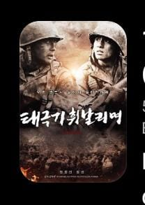

4 Film Perang Korea Terbaik Sepanjang Masa, Kisah Heroik dan Tragis yang Wajib Ditonton

Film Korea Selatan tidak hanya terkenal melalui drama romantis, komedi, dan thriller. Industri perfilman Korea juga mempunyai sejumlah karya perang yang kuat, menggambarkan perjuangan manusia ketika harus menghadapi konflik, kehilangan keluarga, dan mempertaruhkan nyawa demi bertahan hidup.
Salah satu peristiwa sejarah yang sering menjadi latar cerita film Korea adalah Perang Korea yang berlangsung sejak 25 Juni 1950 hingga gencatan senjata pada 27 Juli 1953. Konflik antara Korea Utara dan Korea Selatan tersebut meninggalkan kisah sejarah yang sangat menyedihkan dan menjadi inspirasi bagi banyak sineas.
Jika kamu sedang mencari film perang Korea terbaik sepanjang masa, berikut empat rekomendasi yang layak masuk daftar tontonan. Film-film ini mempunyai cerita, karakter, dan sudut pandang berbeda tentang perang.
1. Taegukgi: Brotherhood of War (2004)

Judul asli: 태극기 휘날리며 (Taegukgi)
Tanggal tayang: 5 Februari 2004 di Korea Selatan.
Genre: Perang, drama, sejarah.
Durasi: 148 menit.
Sutradara: Kang Je-kyu.
Pemain utama: Jang Dong-gun sebagai Lee Jin-tae, Won Bin sebagai Lee Jin-seok, dan Lee Eun-ju sebagai Kim Young-shin.
Sinopsis Taegukgi
Taegukgi mengisahkan dua saudara laki-laki, Jin-tae dan Jin-seok, yang menjalani kehidupan sederhana bersama keluarga mereka. Jin-tae bekerja keras demi membiayai pendidikan adiknya dan mempersiapkan masa depan yang lebih baik.
Namun, kehidupan mereka berubah ketika Perang Korea meletus pada tahun 1950. Keduanya dipaksa masuk militer dan dikirim ke medan pertempuran. Sebagai kakak, Jin-tae berusaha melindungi Jin-seok dengan mengambil berbagai misi berbahaya.
Keputusan tersebut perlahan mengubah kepribadian Jin-tae. Sementara itu, Jin-seok mulai mempertanyakan tindakan kakaknya. Konflik perang akhirnya menguji hubungan persaudaraan mereka dengan cara yang sangat menyakitkan.
Penghargaan Taegukgi
- Baeksang Arts Awards 2004: Best Film.
- Grand Bell Awards 2004: Best Cinematography, Best Art Direction, dan Best Sound Effects.
- Blue Dragon Film Awards 2004: Best Actor untuk Jang Dong-gun, Best Cinematography, dan Best Editing.
- Asia-Pacific Film Festival 2005: Best Film dan Best Director.
Taegukgi menjadi salah satu film perang Korea paling terkenal karena menggabungkan skala peperangan besar dengan kisah emosional tentang keluarga.
2. The Front Line (2011)

Judul Korea: 고지전 (Gojijeon).
Tanggal tayang: 20 Juli 2011 di Korea Selatan.
Genre: Perang, drama, sejarah.
Durasi: 133 menit.
Sutradara: Jang Hun.
Pemain utama: Shin Ha-kyun, Ko Soo, Lee Je-hoon, dan Kim Ok-vin.
Sinopsis The Front Line
The Front Line mengambil latar menjelang berakhirnya Perang Korea. Ketika kedua pihak sedang melakukan perundingan gencatan senjata, pertempuran masih berlangsung di wilayah perbatasan.
Cerita berpusat pada perebutan sebuah bukit strategis yang berkali-kali berpindah tangan antara tentara Korea Utara dan Korea Selatan. Seorang perwira bernama Kang Eun-pyo dikirim untuk menyelidiki kematian seorang tentara yang diduga tewas akibat tembakan dari pihak sendiri.
Dalam penyelidikan tersebut, ia bertemu kembali dengan sahabat lamanya, Kim Soo-hyuk. Namun, kondisi medan perang telah mengubah sahabatnya menjadi sosok yang berbeda.
Film ini menggambarkan bagaimana perang dapat menghilangkan rasa kemanusiaan, bahkan ketika kedua pihak sebenarnya sama-sama menginginkan kedamaian.
Penghargaan The Front Line
- Grand Bell Awards 2011: Best Film.
- Grand Bell Awards 2011: Best Planning untuk Lee Woo-jung.
- Grand Bell Awards 2011: Best Lighting.
- Grand Bell Awards 2011: Best Cinematography.
- Menjadi perwakilan Korea Selatan untuk proses seleksi kategori Film Berbahasa Asing di Academy Awards.
3. Welcome to Dongmakgol (2005)

Judul Korea: 웰컴 투 동막골.
Tanggal tayang: 4 Agustus 2005 di Korea Selatan.
Genre: Perang, drama, komedi.
Durasi: 133 menit.
Sutradara: Park Kwang-hyun.
Pemain utama: Shin Ha-kyun, Jung Jae-young, Kang Hye-jung, Ryu Deok-hwan, dan Im Ha-ryong.
Sinopsis Welcome to Dongmakgol
Berbeda dengan film perang pada umumnya, Welcome to Dongmakgol menghadirkan cerita yang memadukan peperangan, humor, dan kemanusiaan.
Ceritanya berlangsung di sebuah desa terpencil bernama Dongmakgol ketika Perang Korea sedang berkecamuk. Penduduk desa tersebut hidup sederhana dan bahkan tidak memahami sepenuhnya keadaan perang yang sedang terjadi di luar wilayah mereka.
Suatu hari, sejumlah tentara Korea Selatan, Korea Utara, dan seorang pilot Amerika bertemu di desa tersebut. Awalnya mereka saling curiga dan menganggap satu sama lain sebagai musuh.
Namun, setelah tinggal bersama penduduk desa, perlahan mereka mulai memahami bahwa di balik seragam militer dan perbedaan pihak, setiap manusia memiliki rasa takut, harapan, serta keinginan untuk hidup damai.
Penghargaan Welcome to Dongmakgol
- Blue Dragon Film Awards 2005: Best Supporting Actress untuk Kang Hye-jung.
- Blue Dragon Film Awards 2005: Best Supporting Actor untuk Im Ha-ryong.
- Blue Dragon Film Awards 2005: Audience Choice Award.
- Grand Bell Awards 2006: Best Supporting Actress untuk Kang Hye-jung.
- Udine Far East Film Festival 2006: Audience Award.
- Terpilih sebagai pengajuan resmi Korea Selatan untuk kategori Best Foreign Language Film pada Academy Awards ke-78.
4. 71: Into the Fire (2010)

Judul Korea: 포화 속으로 (Pohwa Sogeuro).
Tanggal tayang: 16 Juni 2010 di Korea Selatan.
Genre: Perang, drama, sejarah.
Durasi: 120 menit.
Sutradara: John H. Lee.
Pemain utama: Choi Seung-hyun (T.O.P.), Kwon Sang-woo, Cha Seung-won, dan Kim Seung-woo.
Sinopsis 71: Into the Fire
Film ini terinspirasi oleh kisah 71 siswa tentara Korea Selatan yang harus mempertahankan wilayah Pohang dari serangan pasukan Korea Utara pada Agustus 1950.
Para siswa tersebut sebenarnya belum mempunyai pengalaman tempur yang memadai. Namun, keadaan memaksa mereka untuk mempertahankan posisi militer yang sangat penting ketika pasukan lawan datang dengan kekuatan jauh lebih besar.
Di tengah keterbatasan senjata, rasa takut, dan tekanan peperangan, mereka harus belajar menjadi tentara dalam waktu singkat. Film ini menggambarkan keberanian, persahabatan, serta pengorbanan para pemuda yang terjebak dalam konflik besar.
Penghargaan 71: Into the Fire
- Chunsa Film Art Awards 2010: Jury Prize.
- Grand Bell Awards 2010: Korean Wave Popularity Award untuk Choi Seung-hyun.
- Blue Dragon Film Awards 2010: Best New Actor dan Most Popular Actor untuk Choi Seung-hyun.
- Baeksang Arts Awards 2011: Best New Actor dan Most Popular Actor untuk Choi Seung-hyun.
Film Perang Korea Mana yang Paling Layak Ditonton?
Keempat film tersebut mempunyai keunggulan masing-masing. Taegukgi lebih menonjolkan hubungan keluarga dan pengorbanan dua saudara. The Front Line menghadirkan gambaran kerasnya pertempuran menjelang gencatan senjata. Welcome to Dongmakgol menyampaikan pesan kemanusiaan melalui kisah yang lebih ringan, sedangkan 71: Into the Fire menyoroti keberanian para siswa yang harus menghadapi perang.
Jika harus memilih satu film untuk memulai, Taegukgi bisa menjadi pilihan menarik bagi penonton yang menyukai drama perang berskala besar. Namun, untuk cerita yang lebih dekat dengan sejarah pertempuran dan kondisi militer, The Front Line juga sangat layak ditonton.
Penutup
Film perang Korea terbaik bukan hanya memperlihatkan aksi pertempuran, senjata, dan ledakan. Banyak di antaranya mengangkat sisi kemanusiaan, persaudaraan, persahabatan, dan kehilangan yang dialami masyarakat akibat perang.
Keempat film di atas bisa menjadi pilihan bagi kamu yang ingin mengenal sejarah Perang Korea melalui sudut pandang perfilman Korea Selatan. Selain menghibur, film-film tersebut juga mengingatkan bahwa perang selalu meninggalkan dampak panjang bagi kehidupan manusia.
♡ Yuk, lanjut santai di CewekPedia!
Sudah selesai membaca? Kamu bisa menikmati musik atau bergabung dalam obrolan santai bersama pengunjung lainnya.
💬 Buka Ruang Chat · ♫ Dengarkan Musik